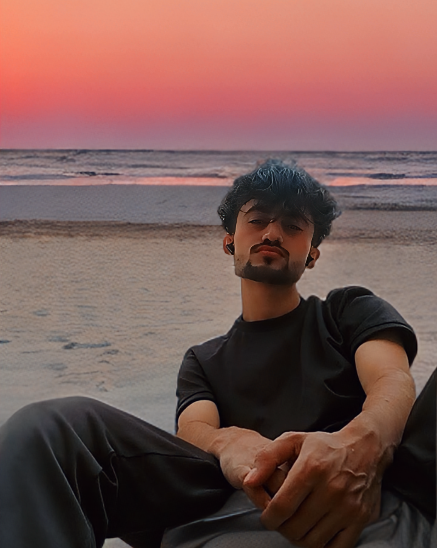

Tech Enthusiast | Cybersecurity Aspirant
Hey there! I'm Bashir Ali, a tech enthusiast passionate about ethical hacking, programming, and exploring the universe. Currently pursuing a BS in Cybersecurity at FAST NUCES Karachi, I'm on a mission to make the digital world safer. Let's connect!
In 10 years, I see myself as a professional white-hat hacker with my own cybersecurity business. I aspire to settle in a peaceful country like Norway or Sweden and make a meaningful impact in the tech world.
June 2023 was the last time I was with my classmates with whom I spent more than 5 years...